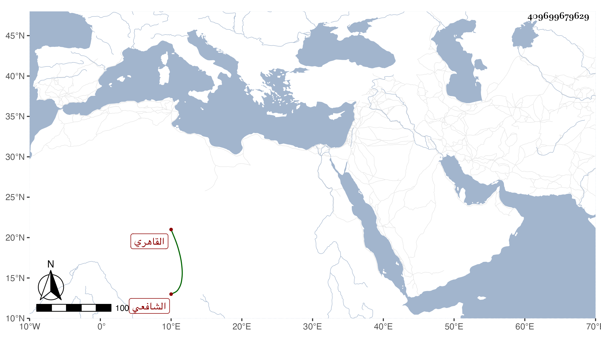

0902Sakhawi.DawLamic.ITO20230111-ara1.EIS1600.409699679629
Biography ID: 409699679629
451
محمد بن علي بن خلف أبو البقاء الترسي الأصل القاهري الشافعي ، وترسة بكسر أولها ثم راء ساكنة بعدها مهملة من الجيزية ويعرف بكنيته . ولد سنة إحدى وأربعين وثمانمائة وحفظ القرآن والبهجة والحاجبية واشتغل كثيرا ونظم قواعد ابن هشام ألفية وأيساغوجي وألفية في العروض وكان أخذه له عن نور الدين الجوجري وللعربية وغيرها عن التقي الحصني والعز عبد السلام البغدادي والفقه عن المناوي وغيره ومن شيوخه أيضا المحلى ، وحكى عن شيخه الحصني أنه التمس منه الجواب عن لغز قال إنه له في نعناع وهو :
| وذي عينين ما اكتحلا بكحل | يؤمهما شبيه الحاجبين |
| إذا ناديته وافى طريحا | لما عاناه من قطع اليدين |
| أباح المسلمون القطع فيه | كسراق النضار أو اللجين |
فقال :
| ألا يا ذا الحجا من قد تعالى | على الأقران فوق الفرقدين |
| بعلم زائد كالبحر ينمو | بلا نقص ولم يوصف بمين |
| فخذ مني جواب اللغز إني | قدحت الفكر فيه قدحتين |
| فأورى زند فكري لي جوابا | أحب إلي مما في اليدين |
| فبع خمساه يا سؤلي وصحف | بماضي البيع شبه الحاجبين |
وقد تكرر اجتماعه بي وزعم أنه شرح الحاوي وأنشدني زجلا قاله في جانبك الجداوي لا بأس به . وهو ممن يتكسب في سوق النساء تحت الربع بجوار إسماعيل ابن المعلى ، وحج ولقي ابنا للشيخ إسماعيل بن المقرئ وقال أيضا إنه أخذ الفرائض عن البوتيجي والعمدة والأربعين وغيرهما عن الشريف النسابة وقرأ على الديمي في آخرين وأثنى على شخص أخذ عنه في التصوف يقال له علم الدين الحصني ولما قدم حبيب الله اليزدي أكثر من ملازمته مغتبطا به في الفلسفة وغيرها وكلماته أكثر من فضله .
